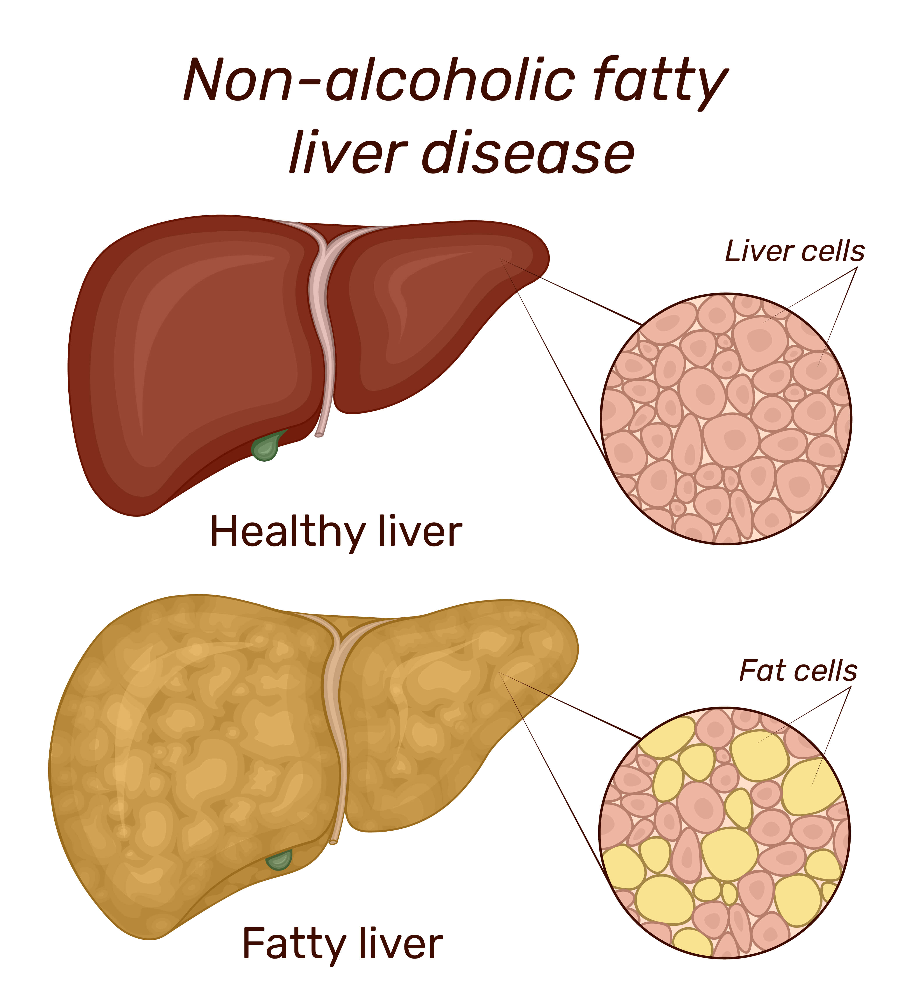
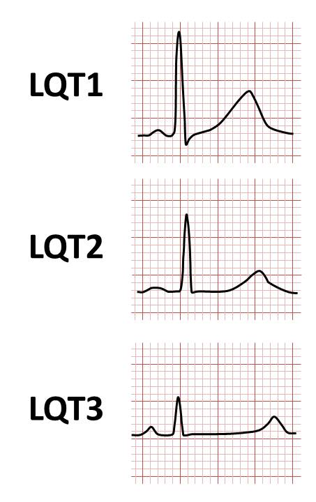

Pharmacological Management
Pharmacology of Antiemetics — Copy
For nausea and vomiting that is not manageable with nonpharmacological interventions, antiemetic drugs are available and can be divided into the following classes:
- Dopamine receptor antagonists
- Serotonin receptor antagonists
- Anticholinergic agents
- Antihistamines
- Neurokinin receptor antagonists
- Glucocorticoids
- Benzodiazepines
- Atypical antipsychotics
- Cannabinoids

Take Note: Administering antiemetics to children when the cause is unknown is not recommended (Southard & Khalili, 2022).
Dopamine Receptor Antagonists
Dopamine receptor antagonists inhibit the dopamine receptors in the CTZ, leading to a reduction in nausea and vomiting (Welliver, 2014). Despite being inexpensive and effective, these medications have a broad range of side effects, including:
- Sedation
- Neuroleptic malignant syndrome
- Agranulocytosis
- Orthostatic hypotension
- Extrapyramidal symptoms
- Altered mental status (i.e., at higher doses)
- QT prolongation
Although rare, neuroleptic malignant syndrome (NMS) is a life-threatening adverse effect of dopamine receptor antagonists and exhibits the following signs and symptoms:
- High fever
- Sweating
- Tachycardia
- “Lead pipe” muscular rigidity
- Unstable blood pressure
- Elevated white blood cell count
- Altered mental status (e.g., stupor)
- Cardiac arrhythmias
- Irregular heart rate
Safety Alert: When NMS is suspected, discontinue the medication and administer dantrolene (Dantrium®, Ryanodex®) immediately. This adverse effect is derived from the antidopaminergic action of these medications.
QT prolongation, a rare adverse effect, occurs more often when given for CINV. Due to its adverse effect profile, dopamine antagonists have fallen out of use and have been replaced by serotonergic antagonists for the treatment of emesis (Welliver, 2014).
Classifications of dopamine antagonists include:
- Phenothiazines (e.g., promethazine [Phenergan®], prochlorperazine [Compro®, Procomp®])
- Substituted benzamides (e.g., metoclopramide [Reglan®, Metozolv®ODT])
- Butyrophenones (e.g., droperidol [Inapsine®]) (not discussed in this course)
Promethazine
A phenothiazine derivative, promethazine has unique qualities (Southard & Khalili, 2022):
- Antidopaminergic
- Anticholinergic
- Antihistamine
It is prescribed primarily for general nausea and vomiting and for more specific types of nausea and vomiting (Southard & Khalili, 2022):
- PONV
- CINV
- Pregnancy-related, including hyperemesis gravidarum (off-label indication)
Dosage and Administration
Promethazine can be administered through several routes, such as orally, intramuscularly, intravenously, and rectally (Southard & Khalili, 2022). Promethazine may be given without regard to meals. For general use in the control of nausea and vomiting, the recommended dose of promethazine is 12.5 to 25 mg in doses at least 4 hours apart.
Promethazine can be administered through several routes, such as orally, intramuscularly, intravenously, and rectally (Southard & Khalili, 2022). Promethazine may be given without regard to meals. For general use in the control of nausea and vomiting, the recommended dose of promethazine is 12.5 to 25 mg in doses at least 4 hours apart.
Promethazine may be administered at a dose of 25 to 75 mg IM or IV during the early stages of labor to provide sedation and relieve apprehension. For general pregnancy-related nausea and vomiting, it can be helpful in relieving symptoms when other antiemetics have been unsuccessful, but it should only be used if the benefit outweighs the potential risk to the fetus.
For motion sickness, the dose is 25 mg up to twice daily, with the initial dose taken 30 to 60 minutes before anticipated motion sickness.
To prevent nausea and vomiting related to surgery, 50 mg can be administered by rectal suppository or oral tablet to adults the night before surgery with 25 to 50 mg used post-operatively.
Adverse Effects and Contraindications
Adverse effects are more common in older adults and range from confusion and drowsiness to tardive dyskinesia. Promethazine is no longer a first-line drug for nausea. Promethazine should not be used in children or adolescents who have vomiting of unknown etiology.
Adverse effects are more common in older adults and range from confusion and drowsiness to tardive dyskinesia. Promethazine is no longer a first-line drug for nausea. Promethazine should not be used in children or adolescents who have vomiting of unknown etiology.
Some adverse effects (some of which may be administration route dependent) for promethazine include:
Select the arrows to learn more.
Safety Alert: The FDA has issued black-box warnings contraindicating use in pediatric patients younger than 2 years due to the possibility of fatal respiratory depression and warning of the risk of severe chemical irritation and tissue damage. Another black-box warning cautions that the injection form of promethazine can result in severe tissue damage, including gangrene.
Prochlorperazine
Prochlorperazine is an antiemetic that has been FDA-approved to control severe nausea and vomiting.
Dosage and Administration
Prochlorperazine is available as an oral liquid, an injectable formulation, a tablet, and a suppository. Antiemetic effects are rapid and often last 4 to 6 hours.
Prochlorperazine is available as an oral liquid, an injectable formulation, a tablet, and a suppository. Antiemetic effects are rapid and often last 4 to 6 hours.
The dose of prochlorperazine varies with the indication and formulation. The lowest dose should always be used to initiate therapy and then adjusted on the basis of individual response. To control severe nausea and vomiting, particularly with PONV, the IM and oral dose is 5 to 10 mg repeated every 4 hours, with a maximum dose of 40 mg per day. The IV dose, administered by slow injection or infusion, is 2.5 to 10 mg, with a single dose not to exceed 10 mg and a total daily dose of no more than 40 mg. The initial rectal dose of prochlorperazine is 25 mg twice daily.

Adverse Effects
In addition to extrapyramidal symptoms and cardiac conduction issues mentioned earlier, reports of adverse effects of prochlorperazine include (Din & Preuss, 2023):
In addition to extrapyramidal symptoms and cardiac conduction issues mentioned earlier, reports of adverse effects of prochlorperazine include (Din & Preuss, 2023):
- Decreased white blood cell count
- Cholestatic jaundice
- Fatty liver
- Amenorrhea
- Elevated levels of the prolactin hormone
- Breast enlargement
- Sexual dysfunction
Safety Alert: Prochlorperazine’s adverse effects are enhanced in children and should be avoided (Din & Preuss, 2023). Its label contains a black-box warning about the risk of increased mortality in older patients with dementia-related psychosis.
Metoclopramide
Metoclopramide is FDA-approved to treat nausea and vomiting in patients with diabetic gastroparesis, gastroesophageal reflux disease (GERD), in those undergoing chemotherapy (i.e., specifically in the parenteral route), or PONV (Isola et al., 2023). Off-label indications for metoclopramide includes migraine treatment (i.e., especially in the emergency department setting).
This drug is known to increase peristaltic movements of the proximal small bowel and relaxes the pyloric sphincter, which facilitates gastric emptying. Metoclopramide also acts as a dopamine antagonist, both peripherally and centrally, raising the nausea and vomiting threshold of the CTZ.
Dosage and Administration
Metoclopramide comes in forms of a tablet, oral solution, nasal spray, or sterile injections. The dose varies depending on the indication for use and the patient’s age. However, the usual oral dose of metoclopramide is 5 to 10 mg.
Metoclopramide comes in forms of a tablet, oral solution, nasal spray, or sterile injections. The dose varies depending on the indication for use and the patient’s age. However, the usual oral dose of metoclopramide is 5 to 10 mg.
Adverse Effects
Advise against taking high doses of metoclopramide or sustaining long-term use of the drug (i.e., greater than 12 weeks). It may increase the patient’s risk of developing tardive dyskinesia, which is seen in over 10% of those who take metoclopramide for extended periods.
Advise against taking high doses of metoclopramide or sustaining long-term use of the drug (i.e., greater than 12 weeks). It may increase the patient’s risk of developing tardive dyskinesia, which is seen in over 10% of those who take metoclopramide for extended periods.
Practice Tip: When using dopaminergic antagonists, always warn patients about extrapyramidal symptoms. Once developed, dyskinesias are very difficult to treat.
Serotonin Receptor Antagonists
Selective 5-HT3 blockers inhibit serotonin in two areas, the CTZ, causing a central antiemetic effect, and on the receptors of the vagus nerve, within the GI tract (peripheral antiemetic effect) (Theriot et al., 2022). These drugs have FDA approval for nausea and vomiting prophylaxis in the pediatric and adult population for after anesthesia and radiation therapy, and for CINV. This course will only highlight ondansetron (Zofran®, Zuplenz®) and granisetron (Sustol®, Sancuso®, Granisol®), but all of the current FDA-approved 5-HT3 blockers are listed below:
- Ondansetron
- Granisetron
- Dolasetron (Anzemet®)
- Palonosetron (Aloxi®)

PeaBrainC, CC BY-SA 4.0 <https://creativecommons.org/licenses/by-sa/4.0>, via Wikimedia Commons
Overall, these drugs are safe and well-tolerated, with the most common side effects being headache, fatigue, and constipation (Theriot et al., 2022). If they are taken with other QT-interval-prolonging medications, QT prolongation can occur, though this risk appears to be higher with IV dosing of 5-HT3 inhibitors. In addition, 5-HT3 inhibitors can have rare, cardiac-related adverse effects, such as arrhythmias, ECG changes (e.g., ST segment depression), and cardiac arrest.
When taken with other serotonergic agents (e.g., selective serotonin-reuptake inhibitors, monoamine oxidase inhibitors), the potential for serotonin syndrome exists (Gravatt et al., 2023).
Practice Tip: Patients should be aware of signs of serotonin syndrome that may occur with 5-HT3 receptor antagonists, such as mental status changes, labile blood pressure, dizziness, flushing, hyperthermia, tremor, rigidity, nausea, vomiting, diarrhea, and seizures (Gravatt et al., 2023).
5-HT3 inhibitors are contraindicated for patients taking apomorphine (Apokyn®), which has resulted in loss of consciousness and significant low blood pressure with simultaneous use (Theriot et al., 2022).
Ondansetron
Ondansetron is effective as an antiemetic for prophylaxis of CINV, radiation-induced nausea and vomiting, and PONV. It is also used off-label for the treatment of nausea and vomiting in pregnancy, although ACOG recommends that providers consider the use of ondansetron for pregnancy on a case-by-case basis (Smith et al., 2023). It is generally considered safe but fetal risk cannot be ruled out. Some studies have shown a very small occurrence of congenital anomalies with ondansetron use.
Dosage and Administration
For the prevention of CINV, ondansetron at 0.15 mg/kg IV (to a maximum single dose of 16 mg) is recommended 30 minutes before chemotherapy. The dose can be repeated 4 and 8 hours after the first dose. For the prevention of PONV, a single 4 mg IV dose prior to anesthesia is recommended.
For the prevention of CINV, ondansetron at 0.15 mg/kg IV (to a maximum single dose of 16 mg) is recommended 30 minutes before chemotherapy. The dose can be repeated 4 and 8 hours after the first dose. For the prevention of PONV, a single 4 mg IV dose prior to anesthesia is recommended.
Oral ondansetron can be administered to prevent CINV and radiotherapy-induced nausea and vomiting. For CINV, an 8 mg dose is administered 30 minutes before the start of chemotherapy followed by a second dose 8 hours later. For a day or two after chemotherapy, 8 mg of ondansetron can be taken twice daily. For patients undergoing radiation therapy, 8 mg of ondansetron is administered 1 to 2 hours before the procedure. Depending on the type of therapy, ondansetron can be continued for a few days after radiation.
To prevent PONV, 16 mg (two 8 mg ondansetron tablets) can be given an hour before induction of anesthesia.
Adverse Effects
Common adverse effects of ondansetron include (Griddine & Bush, 2023):
Common adverse effects of ondansetron include (Griddine & Bush, 2023):
- Dry mouth
- Headache
- Dry mouth
- Constipation
- General discomfort
Safety Alert: Use caution in patients with phenylketonuria (PKU), particularly in the tablet form, which may contain phenylalanine. This may result in permanent neurological injury.
Granisetron
Granisetron is a 5-HT3 receptor antagonist approved for the prevention of CINV, radiation-induced nausea and vomiting, and PONV.
Dosage and Administration
Granisetron comes in the form of a tablet, oral solution, parenteral solution for injection, or a transdermal patch. Dosages include (Medscape, n.d.b.):
Granisetron comes in the form of a tablet, oral solution, parenteral solution for injection, or a transdermal patch. Dosages include (Medscape, n.d.b.):
Select the arrows to learn more.
Adverse Effects
Headaches are the most commonly occurring adverse effect of granisetron. Additional adverse effects include (Medscape, n.d.b.):
Headaches are the most commonly occurring adverse effect of granisetron. Additional adverse effects include (Medscape, n.d.b.):
- Drowsiness and/or sedation
- Somnolence
- Lack of energy
- Abnormal physical weakness
- Diarrhea
- Constipation
- Injections site reactions
- Pain
- Redness or discoloration
- Irritation
- Rash
- Burning
- Itching
- Hives
- Vesicles
Anticholinergic Agents
Anticholinergic agents inhibit the action of acetylcholine at the muscarinic receptor. Like antihistamines, anticholinergics limit the stimulation of the vomiting center from the vestibular system (Gravatt et al., 2023).
Scopolamine
Scopolamine is a belladonna alkaloid and is FDA-approved for the treatment of nausea with motion sickness and PONV (Riad & Hithe, 2023). It has off-label indications to treat CINV. It has antiemetic, amnestic, and central sedative effects. It relaxes smooth muscle and decreases glandular secretion.
Dosage and Administration
Scopolamine is available as a transdermal patch and delivers a steady dose of 1.5 mg over 72 hours. The patch reaches its most optimal efficacy at 24 hours. The patch is round and about 2.5 cm in diameter. Due to its 4-hour onset, instruct patients to apply the patch at least 4 hours before being in a setting that may cause motion sickness or the night before an operative procedure. Teach the patient to the most optimal placement of the patch which is found behind the ear where there is no hair present.
Scopolamine is available as a transdermal patch and delivers a steady dose of 1.5 mg over 72 hours. The patch reaches its most optimal efficacy at 24 hours. The patch is round and about 2.5 cm in diameter. Due to its 4-hour onset, instruct patients to apply the patch at least 4 hours before being in a setting that may cause motion sickness or the night before an operative procedure. Teach the patient to the most optimal placement of the patch which is found behind the ear where there is no hair present.
Practice Tip: Advise the patient not to cut or alter the patch, which may jeopardize the medication delivery. Also, encourage the patient to wash their hands thoroughly to avoid visual disturbances.
Adverse Effect
Although scopolamine usually has an amnestic effect, in higher doses the drug may cause restlessness and over exuberance (Riad & Hithe, 2023). More frequently reported adverse effects include:
Although scopolamine usually has an amnestic effect, in higher doses the drug may cause restlessness and over exuberance (Riad & Hithe, 2023). More frequently reported adverse effects include:
- Dilated pupils
- Blurred vision
- Dry mouth
Scopolamine is contraindicated in patients with angle-closure glaucoma and in those with an allergy to other belladonna alkaloids, such as atropine.
Antihistamines
Antihistamines inhibit the action of histamine at the histamine-1 and histamine-2 receptors (Hauser et al., 2022; Gravatt et al., 2023). Antihistamines that have anti-cholinergic activity are known to reduce stimulation of the vomiting center in the vestibular apparatus by interrupting various visceral afferent pathways. This section will focus on the following:
- Doxylamine/pyridoxine (Bonjesta®, Diclegis®)
- Diphenhydramine (Benadryl®, Unisom®, Aler-Dryl®)
- Meclizine (Antivert®, Bonine®)
Dimenhydrinate (Dramamine®) is another antiemetic antihistamine but will not be featured in this course.
Practice Tip: When antihistamines are used to treat nausea and vomiting, it is primarily associated with motion sickness. Warn patients not to drive or operate heavy machinery when taking antihistamines because they may cause drowsiness.
Doxylamine
Doxylamine blocks the histamine-1 receptors that send signals to the vomiting center of the medulla oblongata. The FDA approved a combination of doxylamine with pyridoxine (an analog of vitamin B-6) for pregnancy-related nausea and vomiting that does not respond to conservative, first-line treatments such as dietary and behavior modifications.
Dosage and Administration
The initial dose is 20 mg doxylamine/20 mg pyridoxine (1 Bonjesta tablet or 2 Diclegis tablets) once daily at bedtime, but the dose may be increased to a maximum of 40 mg doxylamine/40 mg pyridoxine per day, dosed twice daily with Bonjeta or three times a day with Diclegis. Since this drug has an extended release, the tablet should not be altered or chewed (Brott & Reddivari, 2022).
The initial dose is 20 mg doxylamine/20 mg pyridoxine (1 Bonjesta tablet or 2 Diclegis tablets) once daily at bedtime, but the dose may be increased to a maximum of 40 mg doxylamine/40 mg pyridoxine per day, dosed twice daily with Bonjeta or three times a day with Diclegis. Since this drug has an extended release, the tablet should not be altered or chewed (Brott & Reddivari, 2022).
Adverse Effects
Due to the anticholinergic activity of these agents, they should be used with caution in patients with glaucoma, benign prostatic hyperplasia, asthma, or advanced age (Gravatt et al., 2023). The most reported adverse effects of doxylamine include:
Due to the anticholinergic activity of these agents, they should be used with caution in patients with glaucoma, benign prostatic hyperplasia, asthma, or advanced age (Gravatt et al., 2023). The most reported adverse effects of doxylamine include:
- Impaired judgment
- Impaired coordination
- Drowsiness
- Blurred vision
- Double vision
- Urinary retention
Simultaneous use of doxylamine and a monoamine oxidase inhibitor is contraindicated (Brott & Reddivari, 2022). In addition, the use of alcohol while taking doxylamine can cause significant somnolence and should be discouraged. Similarly, advise patients to use caution taking medications that depress the CNS alongside doxylamine.
Meclizine
Meclizine is FDA-approved for the treatment of vertigo secondary to vestibular disorders (e.g., Meniere’s disease) and motion sickness, and its related symptoms (e.g., dizziness, nausea, and vomiting). Meclizine is available as an over-the-counter (OTC) product.
Dosing and Administration
To prevent motion sickness, it should be taken an hour before the start of an activity which may cause nausea and vomiting. The recommended dose for adults and children 12 years and older is 25 to 50 mg once daily, as needed. It is not intended for prolonged use.
To prevent motion sickness, it should be taken an hour before the start of an activity which may cause nausea and vomiting. The recommended dose for adults and children 12 years and older is 25 to 50 mg once daily, as needed. It is not intended for prolonged use.
Adverse Effects
Patients with hypersensitivity to meclizine or its active ingredients should not take this medication. Meclizine has many adverse effects, including:
Patients with hypersensitivity to meclizine or its active ingredients should not take this medication. Meclizine has many adverse effects, including:
- Drowsiness
- Dry mouth
- Fatigue
- Headache
- Vomiting
- Blurred vision
Diphenhydramine
Diphenhydramine is used to treat several conditions including:
- Allergies
- Insomnia
- Dystonia
- Itching
- Motion sickness and related nausea
- Vertigo

Since diphenhydramine is sedating, it is not often used as an antiemetic (Gravatt et al., 2023). Like many antihistamines, diphenhydramine is available OTC.
Dosing and Administration
The normal dose for adults and children older than 12 years is 25 to 50 mg PO/IV/IM every 4 to 6 hours PRN. The adult patient should receive no more than 100 mg in a single dose. The maximum oral dose is a cumulative maximum of 300 mg in 24 hours, and the maximum IV/IM dose is 400 mg in 24 hours. In the pediatric population, the dosing is lower:
The normal dose for adults and children older than 12 years is 25 to 50 mg PO/IV/IM every 4 to 6 hours PRN. The adult patient should receive no more than 100 mg in a single dose. The maximum oral dose is a cumulative maximum of 300 mg in 24 hours, and the maximum IV/IM dose is 400 mg in 24 hours. In the pediatric population, the dosing is lower:
- For ages 2-5, the dose is 6.25 mg PO/IV/IM every 4 to 6 hours PRN, with a maximum dose of 37.5 mg in 24 hours.
- For ages 6 to 11, the dose is 12.5 to 25 mg PO/IV/IM every 4 to 6 hours PRN, with a maximum dose of 150 mg in 24 hours.
It can be dosed up to 30 minutes before a motion sickness-inducing circumstance.
Adverse Effects
The more prevalent adverse effects include (Sicari & Zabbo, 2022):
The more prevalent adverse effects include (Sicari & Zabbo, 2022):
- Drowsiness
- Headache
- Dizziness
- Diminished coordination
- Hypotension
- Paradoxical CNS stimulation
- Diaphoresis
- Cardiac effects (i.e., palpitations, tachycardia)
- Dry mucous membranes
- Constipation
- Ataxia
- Euphoria
The more significant adverse effects include QT prolongation, postrenal obstruction, and subsequent acute kidney injury.
Practice Tip: Advise patients to avoid operating heavy machinery after taking diphenhydramine due to possible CNS depression (Sicari & Zabbo, 2022). Diphenhydramine may also potentiate the effects of sedating medications. Use caution administering it to older patients due to an increased risk of falls secondary to its adverse effects.
Neurokinin Receptor Antagonists
Neurokinin receptor (NK-1) antagonists have had a significant impact on patients with CINV, since they came to the market in the early 2000s. This class has antiemetic, anxiolytic, and antidepressant qualities (Ibrahim & Preuss, 2023). NK-1 antagonists inhibit the stimulus of the vomiting center centrally and peripherally. This course will highlight two NK-1 antagonists:
- Aprepitant (Emend® capsules/powder for solution, Cinvanti®, Aponvie®)
- Fosaprepitant (Emend® for injection)
Patients with hypersensitivity to this class of medications or its active ingredients should refrain from use. Concomitant use of pimozide (Orap®) is contraindicated with this medication due to raising the risk of QTc prolongation (Ritchie & Kohli, 2022). Additional drug-drug interactions for NK-1 receptor antagonists include moderate to strong CYP3A4 inhibitors. Examples include the following medications:
- Lomitapide (Juxtapid®)
- Flibanserin (Addyi®)
- Ivabradine (Corlanor®)
- Tacrolimus (Prograf®)
Aprepitant
Aprepitant has a unique ability to cross the blood-brain barrier, setting it apart from other neurokinin receptor antagonists. It also lacks a predisposition to dopamine, serotonin, or corticosteroid receptors. The result is a highly selective neurokinin receptor antagonist, making it a very effective antiemetic. Aprepitant is effective in the prophylaxis of delayed nausea in patients with CINV, in addition to nausea in those undergoing multiple rounds of chemotherapy. Aprepitant has also been approved by the FDA for the prevention of PONV in the adult population.
Dosing and Administration
In the preoperative setting, one 40 mg capsule of aprepitant can be given 3 hours before anesthesia induction. In patients receiving chemotherapy, an oral dose of 125 mg can be administered an hour before the Day 1 chemotherapy treatment. After this initial dose, a dose of 80 mg PO can be given on the morning of the Day 2 and 3 chemotherapy treatments.
In the preoperative setting, one 40 mg capsule of aprepitant can be given 3 hours before anesthesia induction. In patients receiving chemotherapy, an oral dose of 125 mg can be administered an hour before the Day 1 chemotherapy treatment. After this initial dose, a dose of 80 mg PO can be given on the morning of the Day 2 and 3 chemotherapy treatments.
The IV formulation can be given as a single-dose regimen for moderately emetogenic chemotherapy of 130 mg IV, 30 mins prior to chemotherapy or as a 3-day regimen for highly emetogenic chemotherapy. Additionally, another IV formulation (Aponvie®) can be used as a 32 mg injection prior to anesthesia in PONV.
Adverse Effects
Generally well tolerated, the adverse effects of aprepitant are minimal, however, may be (Ritchie & Kohli, 2022):
Generally well tolerated, the adverse effects of aprepitant are minimal, however, may be (Ritchie & Kohli, 2022):
- Headache
- Fatigue
- Anorexia
- Nausea
- Diarrhea
- Constipation
- Abnormal physical weakness
- Hiccups
- Serious infections (rare)
Practice Tip: This medication lowers the efficacy of oral contraceptives. Inform patients using oral contraceptives to utilize a backup form of contraception or practice abstinence for one month after taking this medication.
Diversity, Equity, Inclusivity, and Belonging Considerations: Aprepitant is an expensive medication; before prescribing this drug, determine if the patient’s insurance will cover the cost or if the patient can afford to self-pay. There is no evidence that this medication is any better than ondansetron.
Fosaprepitant
Fosaprepitant is indicated for the prophylaxis of delayed and acute CINV, particularly with moderately to highly emetic chemotherapy treatments.
Dosing and Administration
For adults, the dose is 150 mg IV for the first day of chemotherapy only. In the pediatric population, children ages 6 months to 17 years, can receive a single dose of fosaprepitant intravenously on the first day of chemotherapy. The rate of infusion for this dose is age-dependent, with the dose given IV over an hour for patients aged 6 months to under 12 years old. Children aged 12 to 17 may receive IV fosaprepitant over 30 minutes, and adults can receive the dose over 20 to 30 minutes.
For adults, the dose is 150 mg IV for the first day of chemotherapy only. In the pediatric population, children ages 6 months to 17 years, can receive a single dose of fosaprepitant intravenously on the first day of chemotherapy. The rate of infusion for this dose is age-dependent, with the dose given IV over an hour for patients aged 6 months to under 12 years old. Children aged 12 to 17 may receive IV fosaprepitant over 30 minutes, and adults can receive the dose over 20 to 30 minutes.
Adverse Effects
The more common adverse effects of fosaprepitant include (Medscape, n.d.a.):
- Low white blood cell count
- Fatigue
- Abnormal physical weakness
- Diarrhea
Less prevalent adverse effects include those with skin involvement, such as a rash, hives, or itching (Medscape, n.d.a.). Stevens-Johnson syndrome and toxic epidermal necrolysis have also been reported as an adverse effect.
Glucocorticoids
Glucocorticoids are most often used for their anti-allergic and anti-inflammatory properties, but they are also effective for preventing nausea and vomiting. Specifically, dexamethasone has a role in the prevention of CINV and PONV (Hesketh et al., 2020).
Dexamethasone
The indication for CINV, PONV, and altitude sickness is off label (Johnson et al., 2023). For the purposes of PONV prevention, dexamethasone’s efficacy is optimized if given prior to anesthesia induction. It is endorsed by the American Society of Clinical Oncology (ASCO) for use in CINV prevention, where it typically given alongside a NK-1 receptor antagonist and 5-HT3 receptor antagonist (Hesketh et al., 2020).
Dosing and Administration
For CINV, 12 to 20 mg of oral or IV dexamethasone may be given prior to the initial chemotherapy, dependent upon which concomitant NK-1 receptor antagonist is chosen (Hesketh et al., 2020). On subsequent days of chemotherapy, the patient can receive 8 mg of IV or oral dexamethasone (i.e., one dose on day 2 and twice daily on days 3-4).
For CINV, 12 to 20 mg of oral or IV dexamethasone may be given prior to the initial chemotherapy, dependent upon which concomitant NK-1 receptor antagonist is chosen (Hesketh et al., 2020). On subsequent days of chemotherapy, the patient can receive 8 mg of IV or oral dexamethasone (i.e., one dose on day 2 and twice daily on days 3-4).
For PONV, dexamethasone has been used in a range of doses, but is commonly dosed between 4 mg to 10 mg IV (Myles & Corcoran, 2021).
Adverse Effects
Some of the more prevalent side effects of dexamethasone include:
Some of the more prevalent side effects of dexamethasone include:
- An enhanced appetite
- Trouble sleeping
- Rash
- Headache
- Dizziness
- Swelling in the extremities
- Mood changes
- Acne
- Diaphoresis
Dexamethasone should be avoided in patients with an active fungal infection due to its potential to cause exacerbation. Use caution in patients with ocular herpes simplex due to the risk of corneal perforation.
Benzodiazepines
Benzodiazepines suppress the activity of dopamine at the CTZ, resulting in a central antiemetic effect. This course will highlight the antiemetic effects of lorazepam (Ativan®).
Lorazepam
Lorazepam has an off-label use for the treatment of CINV symptoms, especially for anticipatory and breakthrough symptoms.
Dosing and Administration
A dose of 0.5 to 2 mg of lorazepam can be given every 6 hours PRN through the following routes:
A dose of 0.5 to 2 mg of lorazepam can be given every 6 hours PRN through the following routes:
- Oral
- IV
- IM
Adverse Effects
CNS and respiratory depression are the most notable adverse effects of lorazepam, which are dose dependent (Ghiasi et al., 2023). For this reason, caution should be used with the concomitant use of other medications causing CNS and respiratory depression. It should not be used in the neonatal or infant population or in patients with acute narrow-angle glaucoma, sleep apnea, or severe respiratory impairment (unless intubated). Additional common adverse effects include:
CNS and respiratory depression are the most notable adverse effects of lorazepam, which are dose dependent (Ghiasi et al., 2023). For this reason, caution should be used with the concomitant use of other medications causing CNS and respiratory depression. It should not be used in the neonatal or infant population or in patients with acute narrow-angle glaucoma, sleep apnea, or severe respiratory impairment (unless intubated). Additional common adverse effects include:
- Hypotension
- Hypoventilation (i.e., intravenous administration)
- Dizziness
- Dysarthria
- Constipation
- Loss of inhibition
- Ataxia
- Urinary retention
- Incontinence
- Liver enzyme elevation
- Acute hepatic injury (rare)
Atypical Antipsychotics
Olanzapine (Zyprexa®) is the only atypical antipsychotic with antiemetic qualities (Saudemont et al., 2020).
Olanzapine
Olanzapine has been effective in the prophylaxis and treatment of CINV (Saudemont et al., 2020). It is particularly effective in the treatment of delayed CINV with highly or moderate chemotherapy treatments (Perwitasari et al., 2011). Due to its affinity for dopamine and serotonin receptors in the vomiting center, it has a central antiemetic effect (Saudemont et al., 2020; Thomas & Saadabadi, 2022).
Dosing and Administration
Olanzapine can be administered orally, via traditional or disintegrating tablet, and parentally via injection. For the purpose of preventing nausea and vomiting, the dose is dependent on the chemotherapy regimen but is commonly 5 to 10 mg on the first 4 to 5 days of chemotherapy (Saudemont et al., 2020).
Olanzapine can be administered orally, via traditional or disintegrating tablet, and parentally via injection. For the purpose of preventing nausea and vomiting, the dose is dependent on the chemotherapy regimen but is commonly 5 to 10 mg on the first 4 to 5 days of chemotherapy (Saudemont et al., 2020).
Adverse Effects
The disintegrating oral form of olanzapine may comprise of phenylalanine; therefore, its use is contraindicated in patients with PKU. In addition, this drug increases the risk of mortality in patients with dementia, and among those with dementia, older patients have an increased risk of a cerebrovascular accident with this drug. Adverse effects of this medication include:
The disintegrating oral form of olanzapine may comprise of phenylalanine; therefore, its use is contraindicated in patients with PKU. In addition, this drug increases the risk of mortality in patients with dementia, and among those with dementia, older patients have an increased risk of a cerebrovascular accident with this drug. Adverse effects of this medication include:
- Weight gain as a result of an enhanced appetite
- Reduced insulin sensitivity
- Hypothermia
- Swelling
- Extrapyramidal symptoms
- Neuroleptic malignant syndrome
- Neutropenia
- Thrombocytopenia
Cannabinoids
The endocannabinoid system in the GI tract participates in the control of intestinal functions, including nausea and vomiting. Therefore, many cannabinoid-related agents have been investigated for their roles in digestive pathologies (Uranga et al., 2018). While this class of drugs has shown efficacy in the treatment of CINV, they are not preferred agents and their use should be pursued cautiously owing to the risk of side effects (Gravatt et al., 2023). Marijuana is not included in guidelines or best practices for the treatment of CINV, and its use is legally and therapeutically controversial (Todaro, 2012). This course will highlight two cannabinoids:
- Dronabinol (Marinol®, Syndros®)
- Nabilone (Cesamet®)
Dronabinol
Dronabinol is a synthetic preparation of tetrahydrocannabinol, which is considered the chief naturally occurring psychoactive constituent of the cannabis plant (O’Donnell et al., 2022). Dronabinol is sometimes used to treat emesis in patients undergoing cancer treatment who have exhausted all conventional antiemetic options without success. This drug has also been approved for the treatment of anorexia in patients with AIDS. Dronabinol is a Schedule III controlled substance.
Dronabinol has been studied as monotherapy for nausea and vomiting, as well as in combination with other antiemetics. Currently, there is not enough data to recommend the routine use of dronabinol as an antiemetic for CINV.
Dosing and Administration
This drug is available as an oral capsule and an oral solution. The recommended starting dose of oral dronabinol is 5 mg administered 1 to 3 hours before chemotherapy. The doses can be repeated every 2 to 4 hours for a total of four to six doses per day.
This drug is available as an oral capsule and an oral solution. The recommended starting dose of oral dronabinol is 5 mg administered 1 to 3 hours before chemotherapy. The doses can be repeated every 2 to 4 hours for a total of four to six doses per day.
Adverse Effects
Patients should refrain from operating heavy machinery or driving while taking this medication until their tolerance of the drug and their ability to drive or operate machinery has been evaluated (O’Donnell et al., 2022). Patients with a history of psychiatric disorders should avoid this drug. Patients should refrain from concomitant use of psychoactive substances (e.g., alcohol) while taking dronabinol due to a risk of enhanced psychotropic effects. Adverse effects of dronabinol include:
Patients should refrain from operating heavy machinery or driving while taking this medication until their tolerance of the drug and their ability to drive or operate machinery has been evaluated (O’Donnell et al., 2022). Patients with a history of psychiatric disorders should avoid this drug. Patients should refrain from concomitant use of psychoactive substances (e.g., alcohol) while taking dronabinol due to a risk of enhanced psychotropic effects. Adverse effects of dronabinol include:
- Seizures
- Paradoxical nausea and vomiting
- Hemodynamic instability
- Physical and mental impairment
Nabilone
Nabilone is a synthetic cannabinoid that can be used for the treatment of CINV (Medscape, n.d.c.). Nabilone is not intended as a first-line agent, nor should it be used on an as-needed basis. Nabilone is a Schedule II controlled substance.
Dosing and Administration
The usual dose in adults is 1 mg to 2 mg every 8 to 12 hours with the initial dose given 1 to 3 hours before chemotherapy. A maximum daily dose is 6 mg.
The usual dose in adults is 1 mg to 2 mg every 8 to 12 hours with the initial dose given 1 to 3 hours before chemotherapy. A maximum daily dose is 6 mg.
Adverse Effects
Common adverse effects for nabilone include (Medscape, n.d.c.):
Common adverse effects for nabilone include (Medscape, n.d.c.):
- Drowsiness
- Vertigo
- Ataxia
- Dry mouth
- Blurred vision and other visual disturbances
- Difficulty concentrating
- Trouble sleeping
- Euphoria and dysphoria
- Headache
- Disorientation
- Orthostatic hypotension
- Tachycardia
Nabilone is contraindicated in patients with a hypersensitivity to cannabinoids and those with a history of psychotic reactions (Medscape, n.d.c.). Use caution with patients with severe hepatic impairment or in those who are emotionally disturbed. Patients should refrain from concomitant use of psychoactive substances (e.g., alcohol) while taking nabilone due to a risk of enhanced psychotropic effects. The operation of heavy machinery should be avoided while taking this medication.
Alternative Treatments
Herbal Supplements
Many herbal supplements are sold in health food stores and pharmacies as a treatment for nausea and vomiting. However, this use is not approved by the FDA and should be considered cautiously.

Ginger
Ginger has been shown to be beneficial for pregnancy-related nausea and vomiting, CINV, PONV, and medication-related nausea and vomiting (Heckroth et al., 2021). The chemical components in ginger, specifically gingerol, zingerone, and shogaol, work in the peripheral and central nausea and vomiting pathways. These chemicals act through neurokinin and serotonin receptors. Ginger has been found to accelerate gastric emptying, enhance gastric tone, and stimulate gastric antral contractions (Hu et al., 2011; Lete & Allue, 2016). Though generally considered safe, the appropriate dose and duration of treatment have not been defined (Lete & Allue, 2016). Adverse effects of ginger are infrequent but include heartburn and belching.
Ginger has been shown to be beneficial for pregnancy-related nausea and vomiting, CINV, PONV, and medication-related nausea and vomiting (Heckroth et al., 2021). The chemical components in ginger, specifically gingerol, zingerone, and shogaol, work in the peripheral and central nausea and vomiting pathways. These chemicals act through neurokinin and serotonin receptors. Ginger has been found to accelerate gastric emptying, enhance gastric tone, and stimulate gastric antral contractions (Hu et al., 2011; Lete & Allue, 2016). Though generally considered safe, the appropriate dose and duration of treatment have not been defined (Lete & Allue, 2016). Adverse effects of ginger are infrequent but include heartburn and belching.
Bioelectric Neuromodulation
A therapy used in the treatment of Parkinson’s disease, chronic pain, and psychiatric disorders, electrical stimulation has emerged as a potential treatment for chronic nausea and vomiting (Heckroth et al., 2021). Clinical studies have unveiled improvement in the reduction of vomiting episodes and the symptoms of gastroparesis. Gastric electrical stimulation (GES) has also been studied on patients without gastroparesis who experience nausea and vomiting. There are two types of GES: Low frequency with high energy stimulation and high frequency with low energy stimulation. Both can be used in the treatment of gastroparesis.
- Research on high energy and low frequency electrical stimulation reveals that it may stabilize gastric dysrhythmias and speed gastric emptying without enhancing nausea and vomiting. However, it is not approved by the FDA.
- Studies found that electrical stimulation with low energy and high frequency revealed a greater reduction of nausea and vomiting in patients with gastroparesis; however, its effect on gastric emptying yielded insignificant results. Due to its low energy consumption, Medtronic developed an implantable device with this technology, which has been FDA-approved for patients with gastroparesis who have exhausted other medical options.
Review
Flag/Unflag this Question
Brody has been suffering from chemotherapy-induced nausea and vomiting and is anticipating their next cycle of treatment. So far, they have tried one antiemetic for CINV, but it did not control their nausea. They have bipolar disorder, for which they self-medicate with alcohol. With the next cycle approaching, your patient requests dronabinol. What are the reasons for refraining from dronabinol use for CINV prevention during the upcoming cycle of chemotherapy? Select all that apply.
Incorrect, try again
Key Takeaways
- A wide variety of antiemetics are available to reduce the effects of nausea and vomiting. Care must be given in deciding which medication is the most appropriate for your patient. Ensure a thorough health history is completed to safeguard your patient from preventable adverse effects.
- Nonpharmacological treatments may be appropriate for some patients, but when drug therapy is needed, the choice of agent should be based on the etiology of nausea, as well as the presence and severity of vomiting, comorbidities, and patient-specific preferences and factors (Gravatt et al., 2023).